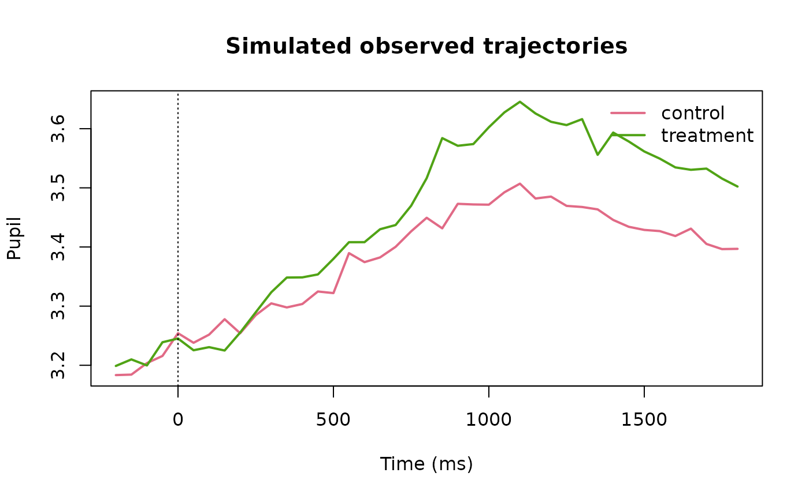

Functional Dynamics and Predictive Calibration
Source:vignettes/functional-dynamics-and-predictive-calibration.Rmd
functional-dynamics-and-predictive-calibration.RmdPurpose
Version 0.5 treats the posterior trajectory itself as an object from which predeclared functional estimands can be derived. This avoids using a single peak or selected window as the only description of temporal change. The functions in this article remain descriptive: they do not infer a physiological onset, changepoint, attention state, or cognitive event.
Backend-free simulation
library(gp3bayes)
sim <- simulate_advanced_pupil_timecourse(
n_participants = 18,
trials_per_participant = 4,
time_points = 41,
time_range = c(-200, 1800),
family = "student",
residual_scale = 0.08,
seed = 2050
)
plot_advanced_pupil_simulation(sim)
Fit declaration
spec <- specify_advanced_pupil_timecourse_model(
sim$data,
temporal_structure = "gaussian_process",
family = "student",
residual_scale = "condition_time",
gp_spec = create_pupil_gp_spec("matern32", basis = "approximate", k = 25),
autocorrelation = "none",
predictive_target = "future_segment"
)
audit_advanced_pupil_identifiability(spec)
#> <gp3bayes_pupil_identifiability_audit>
#> Overall: review
#> Certification: FALSE
#> domain check value status
#> design rows 2952 pass
#> design participants 18 pass
#> design minimum_condition_rows 1476 pass
#> temporal minimum_series_length 41 pass
#> temporal median_series_length 41 pass
#> trajectory unique_time_points 41 pass
#> trajectory gp_basis_rank 25 pass
#> missingness response_missing_fraction 0.03117 pass
#> distribution distributional_sigma condition_time pass
#> distribution student_degrees_of_freedom estimated review
pupil_model_card(spec)
#> <gp3bayes_pupil_model_card>
#> field value
#> gp3bayes_version 0.5.0.9000
#> fit_performed FALSE
#> backend none
#> rows 2952
#> participants 18
#> conditions 2
#> family student
#> temporal_structure gaussian_process
#> residual_scale condition_time
#> autocorrelation none
#> participant_trajectory none
#> measurement_model FALSE
#> missingness_model FALSE
#> predictive_target future_segment
#> complexity_status ok
#> Governance:
#> - No automatic preprocessing, interpolation, exclusion, or model selection.
#> - No automatic cognitive-state, causal, or adequacy interpretation.
#> - Measurement and missingness models remain assumption-conditional.
#> - Predictive comparison is tied to an explicitly declared target.The Student-t and ARMA layers are deliberately not combined by the governed 0.5 interface. Robust observation tails and residual serial dependence should first be assessed as separately declared candidate explanations.
Posterior derivatives
The following fit is intentionally not executed while building the vignette.
fit <- fit_advanced_pupil_model_cmdstanr(spec)
traj <- predict_advanced_pupil_trajectory(fit, ndraws = 1000)
d1 <- estimate_pupil_trajectory_derivative(traj, order = 1)
plot_pupil_trajectory_derivative(d1)
contrast <- estimate_pupil_dynamic_contrast(
traj,
contrast = c("treatment", "control"),
threshold = 0.05
)
plot_pupil_dynamic_contrast(contrast)
estimate_pupil_threshold_duration(
contrast,
direction = "absolute",
threshold = 0.05
)A derivative summarizes rate of posterior trajectory change. It is not an automatic response-onset detector. Likewise, duration above a threshold is only meaningful when that threshold was scientifically prespecified.
Predictive calibration on held-out data
cal <- audit_pupil_predictive_calibration(
fit,
newdata = held_out_trials,
ndraws = 1000,
probability = 0.90,
allow_new_levels = FALSE
)
as.data.frame(cal)
plot_pupil_predictive_calibration(cal)The reported RMSE, MAE, bias, interval coverage, interval width, and
draw-based CRPS describe the supplied prediction task. They become
out-of-sample evidence only when newdata was genuinely
withheld from fitting.